目录
| 方案摘要 | 问题、方法与验证范围 |
| （一）产品概述与定位 | 背景与目标、产品定位 |
| （二）技术架构与创新 | 整体架构、技术选型、创新应用 |
| （三）功能设计与实现 | 核心规划、辅助入口、扩展性 |
| （四）开发调试与部署 | 开发流程、代码实现、测试优化、部署方案 |
| （五）应用价值与展望 | 应用场景、评估、市场与展望 |
| （六）附录 | 设计资料、代码、测试记录与文献 |
方案摘要
时序（ChronoFlow）是一款面向学生的智能学习日程应用，适用于课程时间固定、多项任务并行且安排经常变化的学习场景。系统将任务核对、时间安排与执行反馈连接起来：先由双头预测网络估计任务耗时分布和时段执行概率，再结合个人历史反馈进行校准，最后在课表、每日容量和锁定约束下，生成未来 14 天的学习计划。
系统采用约 34.1 万参数的轻量网络，并将 ONNX 模型、特征编码与规划代码一并封装在 Android 安装包中。本机智能规划可在离线状态下运行；Canvas 同步与可选文本分析分别提供信息导入和内容理解能力。任务、课表及执行反馈保存在本机加密工作空间中，规划器在评价完成风险的同时控制重排扰动，使预测结果转化为可以执行、可以调整的日程。
（一）产品概述与定位
1. 背景与目标
学生的学习任务通常分散在课程平台、群通知和个人记录中。将这些信息转为日程，首先需要核对任务名称、截止日期及变更对象。例如，延期通知应更新原任务，而不是生成一项重复任务。信息整理完成后，还需要回答三个问题：何时开始、预留多久，以及临时变更后如何调整安排。
传统的固定估时难以反映任务耗时与执行行为的差异。同一任务在不同学生之间可能耗时不同，同一学生在不同时段的执行概率也会变化。若新增任务或期限变化引发全量重排，已确认的安排又可能被频繁移动。此外，“未执行”和“执行超时”对应不同问题，需要分别记录和处理。
针对这些问题，时序采用“信息核对—概率预测—约束规划—执行反馈”的处理流程。系统先将自动采集的信息整理为待确认提议，新增、延期和取消分别关联相应任务，并保留来源；手动录入则经表单校验后直接保存。双头网络随后预测耗时分布与时段执行概率，规划器据此在可用时间内分配学习时间块。用户反馈分别用于修正耗时估计和执行概率；重排时保留冻结或锁定的承诺，仅调整其余时间块。候选计划未通过风险复核时，系统继续采用参考计划。
| 场景 | 常见困难 | 本方案的处理 |
|---|---|---|
| 课程任务进入 | 来源重复、日期不清，延期信息可能生成重复任务 | 先核对待确认提议；变更关联原任务并保留来源 |
| 安排学习时间 | 固定估时难以反映超时风险，可用空档受课表限制 | 预测耗时分布；结合课表、容量与连续性检查计划可行性 |
| 临时变更 | 全量重排频繁移动已确认的安排 | 保留冻结和锁定块；比较原计划与修复候选 |
| 执行偏差 | 未执行与执行超时缺乏区分 | 分别记录执行结果和实际耗时，更新相应预测 |
验收围绕业务、预测、规划和工程四个层面展开。业务层检查任务关联与变更处理；预测层检查耗时误差及概率校准；规划层检查截止损失、剩余工作、响应延迟与重排扰动；工程层检查本机运行、锁定保留、预算约束和失败恢复。各层结果分别报告，以明确不同验证结果的适用范围。
2. 产品定位
时序定位于 Android 端的个人学习规划，主要服务有固定课表、需要同时处理多项短中期任务的学生。应用支持 Android 8.0（API 26）及以上系统，包名为 com.chronoflow.local，当前应用版本为 0.5.0。
默认规划范围为未来 14 天，最多处理 30 项活动任务；时间槽长度为 30 分钟，每日任务容量为 360 分钟，可安排时段为 08:00–22:00。固定课程作为占用区间参与规划，任务可设置为允许拆分或必须连续完成。当前范围为单人学习安排，不涉及多人协商或团队联合调度。
产品的核心能力是将概率预测用于受约束的日程安排。耗时分布表达任务可能需要的工作量，时段执行概率帮助选择安排位置，风险与扰动评价共同决定是否重排。模型随安装包部署，使这一过程能够在手机本机完成。表 2 对照相关产品的公开功能，说明时序的场景定位。
| 产品或类别 | 公开功能定位 | 时序的切入点 |
|---|---|---|
| 日历与课程平台 | 记录固定事件、发布课程资料与截止日期 | 在固定课表之外生成学习时间块，保留任务来源和变更关系 |
| TickTick | 待办管理、提醒、日历视图与专注工具 [6] | 面向课程任务展示耗时分位数，利用执行反馈校准后续预测 |
| Motion | 根据截止日期、优先级等自动安排和重排任务 [5] | 结合学生课表与端侧预测，明确评价尾部风险和重排成本 |
| Reclaim | 按可用时间安排任务，支持拆分、冲突重排等规则 [4] | 分别建模耗时与执行行为，通过独立复核选择计划并加密保存状态 |
| 时序 | Android 本机概率预测与受约束滚动规划 | 根据有效反馈修正耗时均值和时段概率，保留冻结或锁定的安排 |
当前交付以 Android 客户端为主。网页端保留任务、课表、课程作业导入与基础排程，跨端同步列入后续规划。通知采集仅处理系统已展示且获得授权的白名单消息，提醒遵循 Android 后台调度机制。全局网络在端侧保持冻结，演示与验收以 Android 内置模型的实际运行状态为依据。
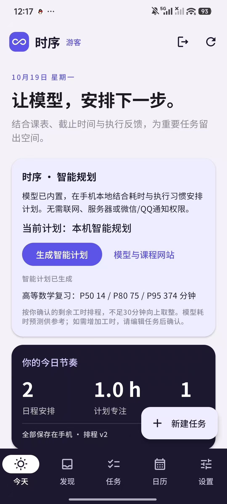
图 1 今天页。本机智能规划展示学习安排，并以 P50、P80、P95 表达任务耗时预测。截图使用测试账号。
（二）技术架构与创新
1. 整体架构
系统分为交互、本地业务状态、概率预测和滚动规划四层。Kotlin 与 Jetpack Compose 提供页面和操作入口；业务层管理任务变更、执行反馈与加密存储；嵌入式 Python 复用特征编码和规划代码；ONNX Runtime Android 在手机 CPU 上执行冻结网络。各层通过本机调用衔接，规划过程无需访问模型服务器。
| 层次 | 职责 | 主要实现 |
|---|---|---|
| 交互与状态 | 提供今天、发现、任务、日历和设置页面，校验输入并反馈运行状态 | Compose、AppViewModel |
| 业务与持久化 | 管理来源合并、用户确认、任务变更、执行反馈与账号隔离 | LocalRepository、LocalEngine、加密存储 |
| 端侧适配 | 将当前工作空间转换为规划输入，校验返回的预测和时间块 | ModelPlannerClient、deployment.planning |
| 概率预测 | 编码任务，输出耗时分布参数与时段执行概率 | ONNX Runtime Android |
| 滚动规划 | 生成候选计划，完成风险评价、局部修复、独立复核与失败回退 | improved_planner、integrated_planner |
任务可以手动录入，也可以从 Canvas 自动同步。用户连接学校 Canvas 并授权后，系统获取作业、公告和日历事项，整理任务名称、截止日期、所属课程及来源，并汇入「发现」页。用户核对后，信息才转为正式任务并参与规划。作业延期或内容更新时，系统关联原有事项，保留变更来源，避免重复创建。
可选文本分析用于通知理解、摘要和复盘，与本机规划分别配置。Canvas 同步和文本分析需要联网；已保存任务的预测与排程仍在本机完成。网络不可用时，用户可以继续录入、查看和安排本地任务。构建过程仅将生产模块与部署模型写入 APK，训练数据、实验报告、PyTorch 检查点和服务端密钥不进入安装包。
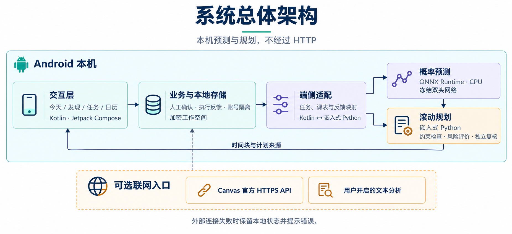
图 2 系统总体架构。实线表示本机预测与规划路径；虚线表示 Canvas 同步及可选文本分析等联网入口。结构示意。
2. 技术选型
预测模块采用字符特征与轻量多层感知机。任务标题经过字符 2/3-gram 哈希编码，生成 32 维任务表示，并与任务属性、用户状态和时间槽特征组合。该结构输入固定、输出明确，便于在端侧复现。网络负责估计分布参数和执行概率，课表、容量、连续性及锁定约束则由规划代码检查，从而明确划分预测与决策的职责。
| 环节 | 选型 | 依据 |
|---|---|---|
| 客户端 | Kotlin、Jetpack Compose，minSdk 26，targetSdk 35 | 界面与存储在 Android 实现，领域逻辑可通过 JVM 回归验证 |
| 预测网络 | PyTorch 训练，导出 ONNX opset 17 | 约 34.1 万参数、1.31 MiB 权重，支持动态批大小及时间槽数 |
| 手机推理 | ONNX Runtime Android 1.23.2，CPU [2] | 在手机执行 ONNX 网络，减少对训练框架的运行时依赖 |
| 规划运行时 | Chaquopy 17.1.0 内置 Python 3.12 [3] | 复用研究环境中的特征编码与规划实现 |
| 可选文本理解 | 兼容 Chat Completions 的 HTTPS 接口 | 经用户启用后处理文本，与内置规划分别配置 |
| 本地存储 | Android Keystore 与 AES-GCM | 工作空间独立加密，禁用系统备份 |
网络由共享任务编码器、耗时预测头和执行预测头组成，具体层宽见表 5。隐藏层使用 SiLU 激活函数和 0.1 的 Dropout。耗时尺度参数通过 softplus 变换后加 0.08，并以 2.0 为上限，以维持数值稳定。
| 模块 | 结构 | 输出 |
|---|---|---|
| 标题投影 | 2048 → 128，SiLU | 标题表示 |
| 共享编码器 | 176 → 256 → 64 → 32 | 任务表示 z |
| 耗时头 | 任务表示与 12 维用户状态拼接，44 → 64 → 2 | 对数正态参数 μ 与有界尺度 σ |
| 执行头 | 任务表示、槽状态与槽属性拼接，56 → 64 → 1 | 每个时间槽的执行 logit |
共享编码器的 176 维输入由四部分构成：128 维标题表示、16 维类别嵌入、16 维课程嵌入和 16 维数值属性。任务类别共 8 类；课程先映射到 512 个稳定哈希桶，再查询嵌入。网络输出耗时分布参数和执行 logits，后续由规划器生成时间块。部署期间网络权重保持冻结，个人反馈通过显式校准参与决策。
| 输入 | 维度与处理 |
|---|---|
| 标题 | 2048 维。完成 NFKC 规范化、小写转换与空白合并后，以字符 2/3-gram 进行有符号哈希，再作 L2 归一化。 |
| 类别 / 课程 | 类别与课程各为 16 维。8 类任务使用可学习嵌入；课程映射到 512 个稳定哈希桶后查询嵌入。 |
| 任务数值 | 16 维，按固定顺序编码难度、优先级、对数估时、截止距离、已发布时长、最早开始延迟及可拆分标记等；难度除以 5，优先级除以 10。 |
| 用户状态 | 12 维接口包含近 7 日完成率、跳过、延后、耗时比与积压等。当前端侧使用全零向量，个人历史通过显式校准参与预测。 |
| 时间槽 | 每槽包含 12 维属性及 12 维槽级状态，编码时段、星期、计划时长、既有负荷与期限信息；缺失截止日期编码为无期限压力。 |
3. 创新应用
本方案的创新重点在于连接预测、个性化与规划决策。系统分别处理任务耗时和执行行为，再将两类信息纳入风险评价与重排控制。图 3 展示完整方法，各环节的作用如下。
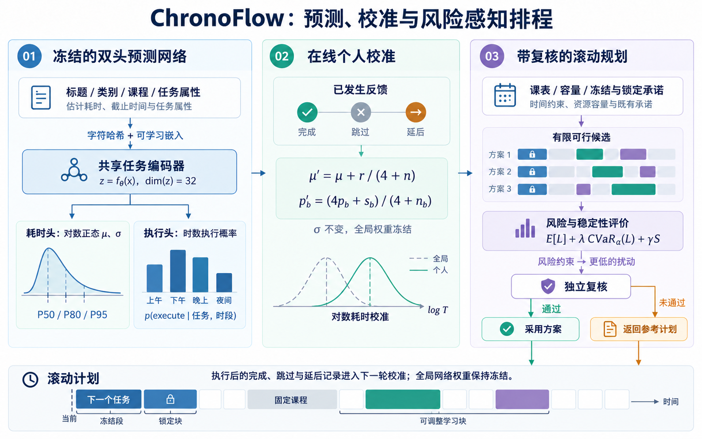
图 3 ChronoFlow 方法框架。左侧为冻结的双头预测网络，中部为在线个人校准，右侧为风险感知滚动规划与独立复核。采用方案或参考计划均进入滚动计划，执行后的有效反馈参与下一轮校准；底部时间轴区分冻结区间、锁定块、固定课程及可调整学习块。结构示意。
- 预测与决策分工。网络估计任务耗时与时段执行概率，规划器负责安排具体位置。候选时间块通过课表、互斥、容量、连续性及承诺约束检查后，才进入计划。
- 分别学习两类不确定性。耗时采用对数正态负对数似然，执行行为采用二分类损失。完成和部分完成标记为发生执行，跳过和延后标记为未执行；未知反馈、补齐位置及未选中的候选时间块不参与监督。
- 以轻量校准实现个性化。执行概率采用强度为 4 的网络先验进行收缩更新；耗时均值依据对数残差修正，尺度参数保持不变。该机制在样本较少时保留全局预测的影响，并随反馈积累逐步体现个人差异。
- 同时评价风险与扰动。规划目标组合期望损失、0.5 倍 CVaR0.9 和归一化扰动成本。系统既关注常态下的完成情况，也关注不利情景下的尾部损失，并通过独立复核决定是否采用新计划。
- 在端侧完成规划。模型与规划代码随 APK 分发，任务预测和时间安排可离线运行。可选联网功能分别授权，其启用状态不影响已保存任务的本机规划。
该方法属于有限候选的风险感知启发式规划，不包含分布鲁棒优化的歧义集合，也不提供全局最优保证。评估将八种方法置于共享潜在执行结果的回放环境中，以比较不同预测信息和规划机制的作用。
（三）功能设计与实现
1. 核心功能
1.1 耗时分布与执行概率
耗时预测采用对数正态分布，界面展示 P50、P80 和 P95 三个分位数。表 7 以同一示例分布说明其含义，数值经取整，仅用于解释读法。
| 输出 | 示例 | 含义 |
|---|---|---|
| P50 | 60 分钟 | 在该示例分布下，约 50% 的耗时不超过 60 分钟 |
| P80 | 90 分钟 | 在该示例分布下，约 80% 的耗时不超过 90 分钟 |
| P95 | 约 133 分钟 | 在该示例分布下，约 95% 的耗时不超过 133 分钟 |
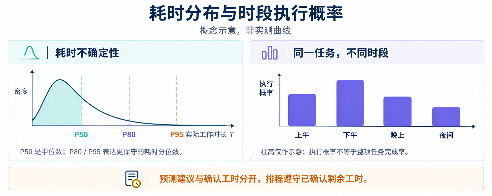
图 4 耗时分布与四时段执行概率示意。图中曲线及概率用于说明概念，不表示项目实测结果。
设任务实际工作分钟为 T，其对数服从正态分布。分布形式与分位数计算如下：
P50 表示耗时中位数，P80 和 P95 表示更保守的工作量估计。执行概率则描述任务在候选时段是否发生执行，与整项任务是否完成分别记录。长任务可以跨多个时间槽推进。当前端侧按上午、下午、晚上和夜间四个时段构造预测输入。
手机端以用户确认的剩余工时作为排程依据，并按任务整体向上取整到 30 分钟槽。例如，60 分钟和 45 分钟均占用两个槽；后者包含 15 分钟取整余量。耗时分位数用于风险评价，不自动增加确认预算。研究回放可采用分位数和执行概率缓冲生成候选，两种模式的结果分别评价。
1.2 在线个性化
执行概率通过时段历史反馈更新。设时段 b 的网络概率为 pb，已观察到的执行次数和尝试次数分别为 sb、nb。以网络概率作为强度为 4 的先验，更新式为：
耗时校准仅使用已完成任务的可靠用时。设有效反馈数为 n，对数残差和为 r，则修正对数均值 μ，同时保持尺度参数 σ 不变：
没有历史反馈时，系统使用全局预测。每次调用仅重建当前账号的有效历史，拒绝未来时刻的完成或反馈记录。跳过计入尝试次数，并占用相应的当日容量。
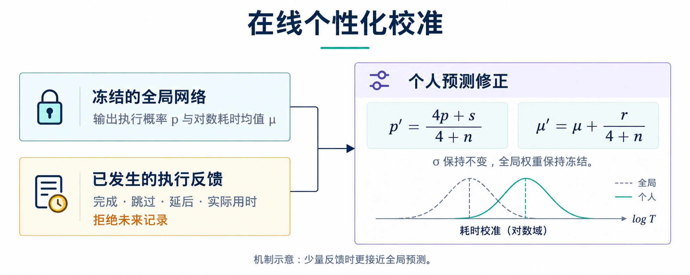
图 5 在线个性化校准。执行概率公式中的 s、n 分别为对应时段的执行数和尝试数；耗时公式中的 r 为对数残差和，n 为可靠完成耗时记录数。耗时校准保持对数域 σ 不变，全局网络权重保持冻结。机制示意。
当前研究与端侧实现均使用全零网络用户状态和四时段原型特征，个人历史主要通过上述显式校准进入规划。完整长期用户状态及真实候选块负荷属于后续输入扩展范围。
1.3 风险感知滚动规划
规划器在不同执行情景下评价计划质量。单次情景损失由截止损失、剩余工作和响应延迟组成：
其中，D 为窗口内到期任务的优先级加权未按时完成比例，U 为加权剩余工作比例，R 为从决策时刻到完成或窗口末尾的归一化延迟。在此基础上，主目标结合期望损失与尾部风险 [1]，总目标进一步计入重排扰动：
S 为归一化扰动成本，覆盖时间块的移动、新增和删除，并对临近的旧时间块赋予更高权重。因此，扰动成本与日历上实际移动的分钟数分别计量。
为降低冷启动阶段对少量反馈的依赖，情景生成同时使用网络预测和初始估时先验。网络分布的权重随有效耗时反馈数 n 增长：
其余情景由初始估时对应的对数正态分布生成，尺度参数为 σ = 0.35，执行率先验为 0.75。尾部风险基于两组情景合并后的损失评价。
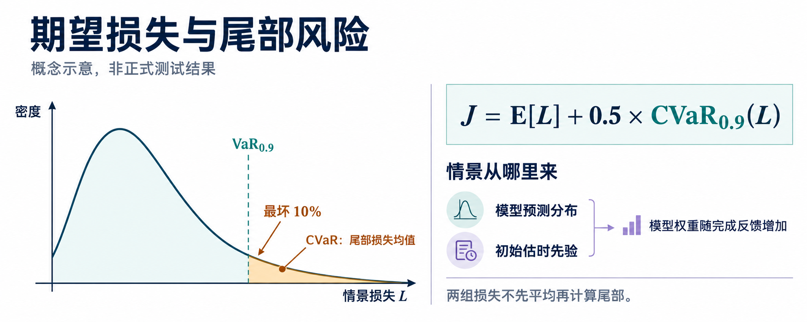
图 6 期望损失与尾部风险。着色区域表示最差 10% 的情景损失，图中目标式仅展示风险主目标；完整扰动项与约束见正文。概念示意，不对应正式测试数值。
候选搜索先比较最早截止优先、保留旧计划后补空、分位数与优先级或松弛量组合、时段偏好及执行率缓冲等策略。候选通过硬约束检查并去重后，规划器按 1、2、4 项直至全部受影响任务逐步扩大修复范围。
筛选同时检查均值与尾部风险：配对损失差的近似上界应不超过 0，尾部则比较经验 CVaR。参考搜索、集成筛选和最终复核各使用独立的 16 个情景样本，编号依次为 0–15、16–31 和 32–47。最终复核未通过时直接返回参考计划，避免在复核样本上再次搜索。
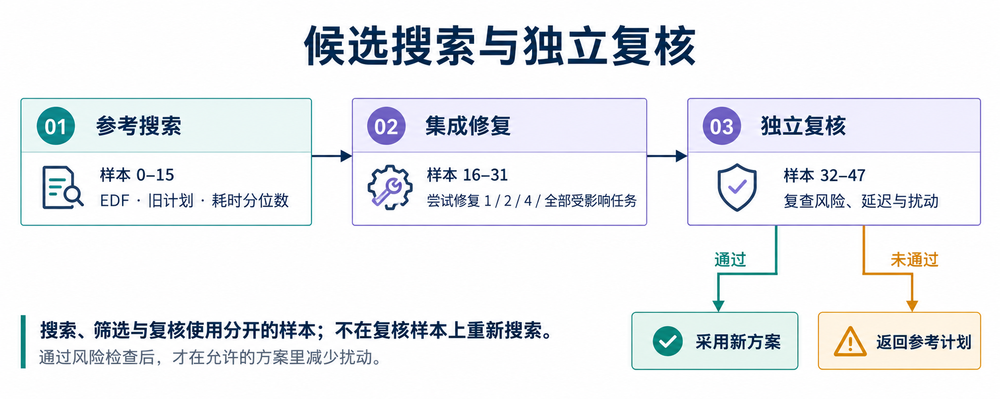
图 7 候选搜索与独立复核流程。搜索、筛选和复核分别使用独立样本；复核失败时保留参考计划。
硬约束要求任务已发布且到达最早开始时间，时间块互不重叠，并避开固定课程。所有安排应位于规划窗口和工作时段内，满足每日容量及不可拆任务的连续性要求，同时保留锁定块和未来 120 分钟内的冻结安排。截止日期参与风险评价；容量不足时，系统允许出现未完成或逾期，并明确显示缺口。
确认工时模式分别计量剩余工作分钟和日历占用分钟。设任务 i 的剩余工作分钟为 ri，以 30 分钟为单位向上取整，得到日历预算：
未来时间块的占用总量不得超过该预算。取整余量小于 30 分钟，仅用于时间槽对齐。规划先扣除锁定或正在执行的承诺，再分配剩余预算；若受保护承诺已超出预算，则提示用户核对并保留原块。截止前空档不足时，仅安排可用部分，并展示未安排工时。
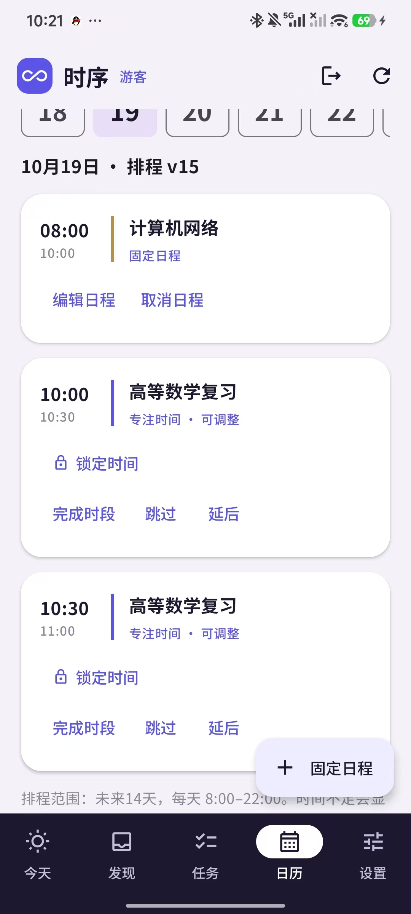
图 8(a)–(b) 同日日历对照。左图将 60 分钟任务分为两个时间槽；右图加入 08:00–10:00 的固定课程后，学习安排避让至 10:00 之后。
1.4 用户可观察到的闭环
| 步骤 | 入口 | 可观察结果 |
|---|---|---|
| 采集信息成为任务 | 发现页核对后确认 | 核对并修正名称、日期及耗时，确认后保存 |
| 生成本机计划 | 今天页「生成智能计划」 | 显示「当前计划：本机智能规划」，并列出 P50 / P80 / P95 |
| 固定与锁定 | 日历中的固定日程和锁定 | 学习安排避开课程，锁定块在重排后保持不变 |
| 延期与取消 | 发现页选择已有事项 | 更新原任务并保留来源，不重复创建 |
| 执行反馈 | 完成、跳过、延后和实际用时 | 分别保存时间块执行结果与整项任务完成状态 |
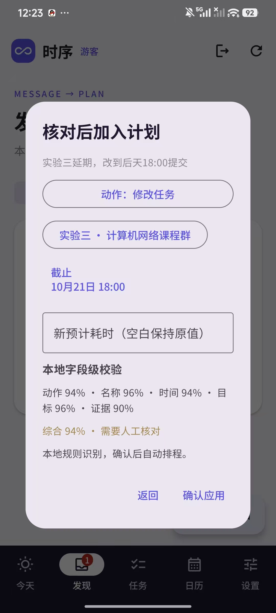
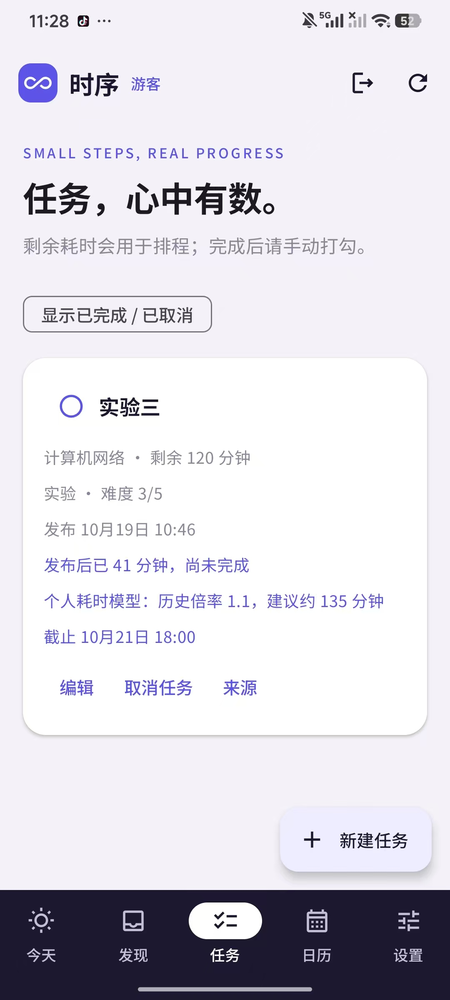
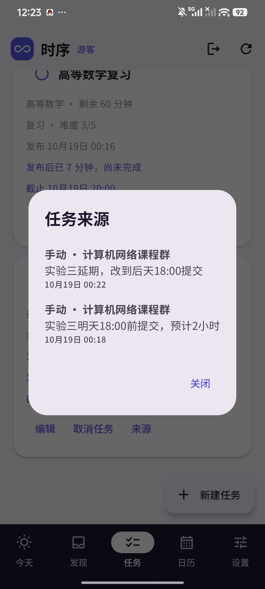
图 8(c)–(f) 任务核对与延期处理。延期通知关联已有的「实验三」，任务截止时间更新为 10 月 21 日 18:00，同时保留原通知和延期通知两条来源。测试账号截图。
2. 辅助功能
辅助功能负责提供任务信息、维护使用状态和处理异常，与核心规划形成衔接。各入口及其作用见表 9。
| 模块 | 作用 | 与规划的关系 |
|---|---|---|
| 手动任务 | 录入任务名称、课程、期限与预计耗时 | 保存后参与本机规划 |
| Canvas | 经个人令牌授权，同步课程作业、公告与日历事项 | 通过学校官方接口同步，新增与变更先进入发现页核对 |
| 微信 / QQ 通知 | 采集系统已展示且符合白名单规则的群通知 | 默认关闭；启用后可使用本地规则或经授权的文本分析 |
| 可选文本分析 | 提供复合通知拆分、摘要、风险说明与复盘 | 独立于内置规划；处理失败时保留原任务状态 |
| 本机账号 | 提供注册、登录与游客模式，按身份保存工作空间 | 账号切换后隔离任务、反馈与未完成请求 |
| 基础排程 | 本机模型关闭或自动重排失败时提供基础安排 | 界面标记「离线基础排程」，与模型计划分别展示 |
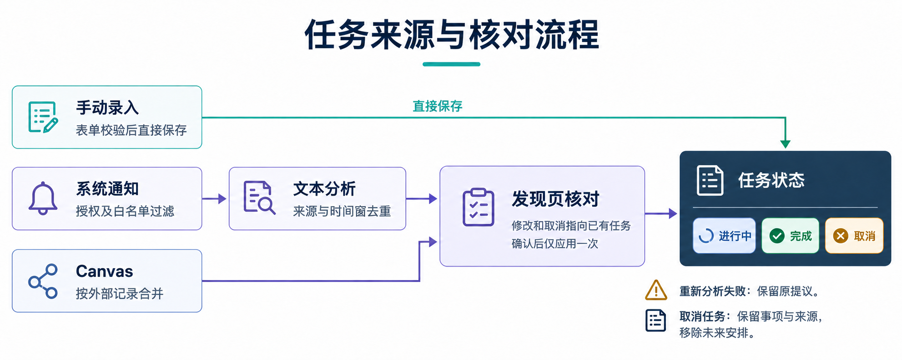
图 9 任务来源与核对流程。手动录入经表单校验后直接保存；系统通知经文本分析与去重、Canvas 按外部记录合并后，进入发现页核对。修改与取消关联已有任务，确认后仅应用一次。结构示意。
通知处理按动作、名称、时间、目标和原文证据进行字段级核对。修改与取消必须关联已有任务，去重综合来源、群名、发送者、正文及约 10 分钟的时间窗。启用可选文本分析时，首次请求发生在业务去重之前，重复消息仍可能产生请求。该入口主要解决信息整理问题，预测与规划评价单独开展。
3. 扩展性设计
模型、特征与规划约束采用清晰的接口分工。模型升级时更换经校验的 ONNX 文件及特征配置，规划约束继续由独立代码检查。可选文本分析按工作空间配置接口地址、模型与密钥，支持比赛官方网关或用户指定的 HTTPS 服务。
后续扩展长期用户状态或真实候选块负荷时，应固定特征定义与对照条件，并使用独立版本评价其相对当前输入的增益。
候选生成策略、风险权重和确认工时模式均采用显式配置。研究回放与手机产品使用各自的预算口径；网络、先验、搜索策略和容量配置的变化均绑定版本与评估记录，保证结果可追溯。
（四）开发调试与部署
1. 开发流程
开发按任务与状态建模、预测与规划、端侧集成、测试归档等工作逐步推进。算法生产源码维护于 model/，Android 工程维护于 apps/android/。构建时按白名单复制生产模块，使研究与端侧共用主要算法实现。五个开发阶段及其职责、交付物见表 10。
| 开发阶段 | 工作线与职责 | 交付物 |
|---|---|---|
| 第一阶段 | 建立任务与课表数据模型，接入课程来源，准备受控通知样本和基础评估 | Android 原型、Canvas 连接、结构化任务与评估入口 |
| 第二阶段 | 完善账号与 API 配置，统一网页和 Android 的交互及视觉 | 账号隔离、文本接口模式与一致的页面组织 |
| 第三阶段 | 实现双头预测与风险规划，建立因果回放和基线对照 | 训练入口、预测网络、基线方法与回放器 |
| 第四阶段 | 完成 ONNX 导出和嵌入式 Python 集成，落地确认工时预算约束 | 端侧模型、内置规划路径、Debug APK 与构建记录 |
| 第五阶段 | 开展约束回归、模型一致性和设备闭环验证，归档实现与测试材料 | 测试用例、结果记录、模型校验清单与版本化说明 |
各工作线通过统一接口衔接。算法侧提供冻结模型、特征定义和规划协议，客户端提供任务及反馈快照，测试侧检查约束、持久化、失败恢复与账号隔离，文档侧维护版本信息和证据索引。
2. 代码实现
训练入口默认采用 AdamW 优化器，耗时损失与执行损失分别在有效标签上取均值，默认权重均为 1。主要超参数见表 11，包括学习率、批大小、最大轮次、早停及梯度裁剪。表中为代码默认配置，交付权重的实际训练轮次以训练日志和检查点记录为准。
数据适配遵循时间因果约束：用户状态仅取预测日期之前的记录，预测时刻不得早于任务发布，计划生成不得早于任务可见，模拟真值字段不进入输入特征。预测数据按用户划分为训练 42 名、验证 9 名、测试 9 名，另设 30 个语义族留出。两种测试视图存在部分重叠，结果分别解释。
| 训练项目 | 默认配置 | 说明 |
|---|---|---|
| 优化 | AdamW，学习率 0.001 | 权重衰减 0.0001，梯度范数裁剪 5.0 |
| 轮次 | 最多 80 epoch，batch 64 | 验证总损失连续 10 轮不改善则早停 |
| 随机性 | 使用固定随机种子 | 保存验证损失最好的检查点 |
| 耗时标签 | 具有可靠记录的实际工作分钟 | 缺失标签不参与损失，耗时目标下限为 1 分钟 |
| 执行标签 | 完成、部分完成为正例 | 跳过、延后为负例，未知反馈及未选中候选不参与训练 |
| 划分 | 用户 42 / 9 / 9 | 另设 30 个语义族留出，两种测试视图存在部分重叠 |
部署元信息记录模型版本及训练标记；训练入口的默认配置与交付模型的实际训练过程分别管理。
业务数据围绕任务、固定占用、待确认提议、时间块和执行记录组织。任务编号在变更过程中保持稳定，工作分钟与日历占用分别计量；时间块记录来源引擎与计划版本，执行反馈仅在发生后进入个性化。各对象的字段及一致性规则见表 12。
| 对象 | 关键字段与一致性 |
|---|---|
| 任务 | 包含编号、标题、课程、类别、难度、估时、剩余工时、截止日期与状态。编号保持稳定，剩余工时不超过确认工时，完成时间可追溯。 |
| 固定占用 | 包含名称、起止时间与来源。结束晚于开始，按实际区间占用，学习任务须避开该区间。 |
| 待确认提议 | 保存原文、来源、动作、关联目标、日期、耗时和证据。每条提议仅应用一次，修改与取消须关联已有事项。 |
| 时间块 | 保存任务编号、起止时间、锁定状态、计划版本与引擎标识。时间块互不重叠，重排保留锁定承诺。 |
| 执行记录 | 保存关联任务、计划起点、时长、结果与记录时刻。已发生的有效记录参与个性化及容量累计。 |
model/src/chronoflow_model/ 中的网络、损失和特征；model/evaluation/ 中的预测修正、候选搜索和集成规划；model/deployment/ 中的端侧适配；apps/android 中的 ModelPlannerClient 与 EmbeddedModelRuntime。2.1 核心代码片段
耗时分位数由网络输出的对数正态参数直接计算。输入张量最后一维依次为 μ 和 σ，输出单位为分钟，无需通过采样近似分位数。
def duration_quantiles(parameters: Tensor) -> tuple[Tensor, Tensor, Tensor]:
"""Return log-normal P50/P80/P95 in minutes without sampling."""
mu, sigma = parameters[..., 0], parameters[..., 1]
p50 = torch.exp(mu)
p80 = torch.exp(mu + 0.8416212336 * sigma)
p95 = torch.exp(mu + 1.6448536270 * sigma)
return p50, p80, p95代码 1 chronoflow_model/network.py::duration_quantiles。两个常数分别为标准正态分布的 0.8 和 0.95 分位点，P50 由对数均值直接计算。
在线更新使用冻结网络的预测与历史计数。耗时分支累积对数残差，时段分支将网络概率作为强度为 4 的先验，以收缩更新降低小样本波动。
if personalized:
for key, (success, total) in history.items():
if key == '_duration':
mu += success / (4 + total)
else:
probabilities[key] = (
4 * probabilities[key] + success
) / (4 + total)
return mu, sigma, probabilities代码 2 evaluation/predictor.py::Predictor.predict 的字典历史分支。耗时分支中的 success、total 分别为残差和及完成数；时段分支中二者分别为执行次数和尝试次数。更新过程保持全局网络权重不变。
3. 测试优化
验证分为预测、规划和工程三个层面。预测采用用户留出与语义留出两种视图：耗时评价 MAE、负对数似然、CRPS、分位数覆盖率和区间宽度；执行概率评价 BCE、AUROC、Brier、未执行召回率和 ECE。统计基线仅从训练集估计，包括全局耗时中位数、单一对数正态分布、总体执行率和固定概率 0.5。仅有一个类别时，AUROC 记为空值。
| 方法 | 使用的信息 | 决策差别 |
|---|---|---|
| 最早截止优先（EDF） | 初始估时 | 最早截止优先 |
| 优先级 EDF | 初始估时 | 优先级与松弛量 |
| 确定性规划 | 学习到的 P50 | 评价时将执行概率固定为 1 |
| 耗时概率规划 | 学习到的耗时分布 | 采用执行率先验 0.75，以期望损失选择计划 |
| 全局概率规划 | 冻结网络的耗时和执行概率 | 使用全局预测，不加入个人历史校准 |
| 个性化规划 | 同上，加上已发生反馈 | 在全局预测基础上评价历史反馈校准 |
| 风险感知对照 | 同上 | 进一步将 CVaR 纳入风险目标 |
| 风险感知滚动规划 | 集成预测与在线更新 | 同时采用风险评价、扰动控制、候选修复及独立复核 |
规划评价采用共享离散事件环境。八种方法使用由场景、种子和任务共同确定的潜在执行结果，使比较不受运行顺序影响。压力条件涵盖常态、P95 耗时、连续两次跳过、课表拥挤、晚间执行率下降及新紧急任务。
评估程序支持以场景为聚类单位进行 2,000 次 Bootstrap。现有历史汇总未附区间数值，因此本节仅作描述性比较。风险感知对照与主方法同时涉及搜索和保护规则差异，比较对象为整套配置；规划内部组合损失的 CVaR 与最终截止损失的 CVaR 分别定义。
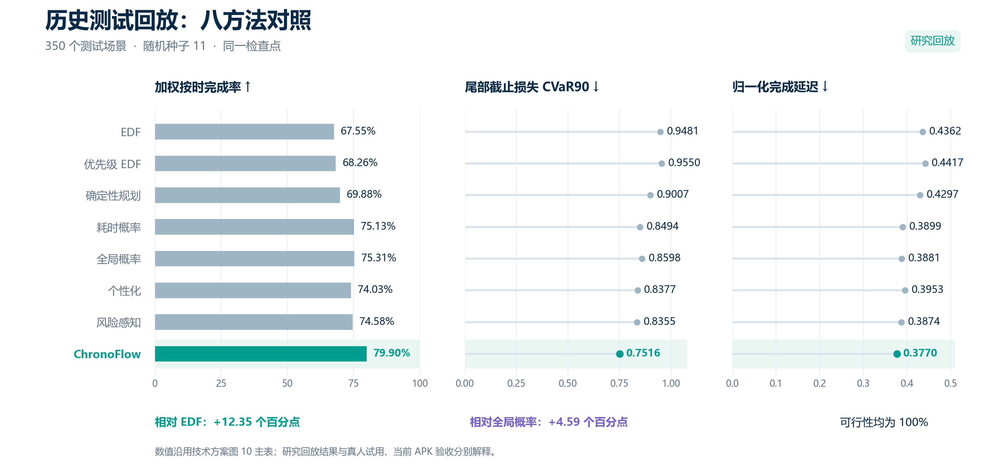
图 10 历史测试回放（350 场景，种子 11，同一检查点）。三个面板依次为优先级加权按时完成率、尾部截止损失 CVaR90 和归一化完成延迟，第三项按正文的归一化受限延迟口径解释。数值沿用历史主表，不代表真人试用或当前 APK 的收益。
| 方法 | WOTCR ↑ | 归一化受限延迟 ↓ | CVaR90 ↓ | 扰动成本† ↓ | 可行性 ↑ |
|---|---|---|---|---|---|
| EDF | 67.55% | 0.4362 | 0.9481 | 34,962 | 100% |
| 优先级 EDF | 68.26% | 0.4417 | 0.9550 | 37,474 | 100% |
| 确定性规划 | 69.88% | 0.4297 | 0.9007 | 35,954 | 100% |
| 耗时概率 | 75.13% | 0.3899 | 0.8494 | 315,187 | 100% |
| 全局概率 | 75.31% | 0.3881 | 0.8598 | 328,762 | 100% |
| 个性化 | 74.03% | 0.3953 | 0.8377 | 320,860 | 100% |
| 风险感知 | 74.58% | 0.3874 | 0.8355 | 317,024 | 100% |
| ChronoFlow（主方法） | 79.90% | 0.3770 | 0.7516 | 165,329 | 100% |
3.1 指标定义与结果解释
| 指标 | 定义与单位 |
|---|---|
| WOTCR | 窗口内到期且按时完成任务的优先级之和，占窗口内全部到期任务优先级之和的比例。逐次计算后汇总有效记录，以百分比表示。 |
| 归一化受限延迟 | 对已可见任务计算 [min(完成时刻, 窗口末时刻) − 发布时间] / [窗口末时刻 − 发布时间] 后求均值。该指标无量纲，未完成任务在窗口末截断。 |
| CVaR90 | 各次回放中最差 10% 截止损失的经验均值。截止损失采用优先级加权未按时完成比例，与规划内部组合损失分别定义。 |
| 扰动成本† | 累计时间块起止偏移及新增、删除块的占用分钟，并按原块的临近程度加权。结果表沿用历史汇总值，不解释为每人或每场景的平均移动分钟。 |
| 可行性 | 无已检查约束违规的回放记录比例。检查互斥、固定占用、窗口、工作时段、每日容量及连续性，另核验冻结承诺；该指标不代表任务全部按时完成。 |
在该历史回放中，主方法的 WOTCR 最高，归一化受限延迟和截止损失 CVaR90 最低。相对全局概率方法，扰动成本降低约 49.71%；但其值仍约为 EDF 的 4.73 倍，体现完成效果与重排成本之间的取舍。
单独加入个性化校准后，WOTCR 为 74.03%，低于全局概率方法的 75.31%，说明该模块在本记录中并未改善全部指标。主方法同时采用候选搜索、修复、风险评价和保护规则，其结果应作为整套配置评价。
历史主表与图 10 对应。当前图表附件不包含逐场景记录、完整训练日志和区间统计，因此结论限定于所列回放汇总，不用于推断真实用户效果或总体优越性。
| 验证对象 | 证据 | 结论范围 |
|---|---|---|
| Python 与端侧协议 | 特征、规划、确认预算与桥接用例 | 验证协议与约束逻辑，真机推理另行测试 |
| Android 工程 | 2026-10-18 构建记录及 5 项通过的 JVM 测试 | 验证模型打包与工程逻辑，设备性能和安全性分别评估 |
| 方法比较 | 350 场景、种子 11 的历史图表与八方法主表 | 结论限定于研究回放，手机确认工时模式单独评价 |
| 设备运行 | 今天页、日历及任务来源截图 | 展示交互状态，性能与长期效果采用独立记录 |
| 数据来源 | 划分文件保留模拟标记；执行由回放器生成 | 按模拟或数据驱动回放解释，不计为真实用户试验 |
设备验收使用统一测试账号与同一安装包，依次核验计划来源、约束、反馈和持久化。表 17 为执行协议，具体通过情况以对应设备运行记录为依据。
| 步骤 | 操作 | 通过标准 |
|---|---|---|
| 1 | 测试账号添加两项任务和一段固定课程 | 任务和课表都进入当前工作空间 |
| 2 | 关闭可选文本分析和通知采集，点「生成智能计划」 | 出现「当前计划：本机智能规划」和分位数 |
| 3 | 查看分位数、课表避让和这项任务的全部未来时间块 | 不占用上课时间，确认工时不被重复追加 |
| 4 | 锁定一块，再新增另一项任务并重排 | 锁定块的日期和起止不变 |
| 5 | 记录一次完成、跳过或延后，以及实际用时 | 时间块结果和整项任务完成分开保存 |
| 6 | 强制停止后重启，再切换账号 | 计划恢复；另一个账号看不到这些任务和反馈 |
| 7 | 构造无空档或承诺超出预算 | 显示明确提示并保留原计划和锁定块 |
3.2 工程优化
| 问题 | 实现措施 | 验证依据 |
|---|---|---|
| 预测缓冲与确认预算存在冲突 | 按任务整体计算取整预算，扣除受保护承诺后分配剩余空间 | 60 分钟与 45 分钟预算用例；超额锁定承诺产生明确冲突 |
| 计划来源与失败状态需要明确 | 分别标记模型计划与基础排程，手动生成失败时保留原计划 | 设备协议中的来源标识、失败提示与恢复用例 |
| 端侧与研究实现需要保持一致 | 按白名单复制生产模块，并附模型元信息与 SHA256 | 构建记录与附件中的模型元信息、校验清单 |
| 账号切换可能影响异步状态归属 | 按身份持久化，每次调用重建当前工作空间历史 | 账号切换与重启恢复协议 |
设备性能分别计量模型冷启动、稳定推理和完整规划耗时，并记录任务数、固定占用数、重排次数、内存峰值、设备型号及 Android 版本。预测质量、工程正确性与设备性能分别报告。
4. 部署方案
用户安装 APK 后即可使用内置模型，手机无需另装 Python、Docker 或 PyTorch。构建环境需要 Android SDK 35 和 Python 3.12，运行库支持 arm64-v8a 与 x86_64。模型初始化核验 SHA256；特征维度不符、输出非有限值或约束冲突时返回明确错误。Canvas 同步和可选文本分析分别使用网络连接。
| 项目 | 配置与运行方式 |
|---|---|
| 模型文件 | chronoflow_predictor.onnx，1,375,015 字节，约 1.31 MiB |
| SHA256 | 7df73b81f440827ba3bbc6a2977b2769b2f9559ae53b89d31efc683caaa1eaa9 |
| 运行库 | Chaquopy 17.1.0，ONNX Runtime Android 1.23.2 |
| 调用路径 | 后台线程进入 EmbeddedModelRuntime，不发起 HTTP |
| 失败策略 | 自动重排失败时保存业务修改并标明基础排程；手动生成失败则保留原计划 |
ONNX 权重大小为 1.31 MiB。2026-10-18 的构建记录中，包含 Python 和 ONNX Runtime 运行库的 Debug APK 约为 100.35 MiB。两项数值分别描述模型和安装包体积，推理与规划耗时另行测量。
安全控制围绕本地存储、账号隔离和外部传输展开。账号切换后，旧请求结果不得写入新身份；各类数据的保存位置、传输范围及授权方式见表 20。演示截图与附件采用去标识数据。
| 数据或能力 | 保存与传输 | 控制 |
|---|---|---|
| 任务、课表与反馈 | 本机加密工作空间；内置规划不上传 | Android Keystore 与 AES-GCM，按身份隔离 |
| 本机账号 | 用户名与盐化密码校验值 | PBKDF2-HMAC-SHA256，不保存明文密码 |
| Canvas | 令牌留在本机；请求学校同源 HTTPS | 不索取学校密码，分页和重定向限制同源 |
| 用户文本接口 | 仅将相关文本传至用户选择的服务 | 由用户主动启用，密钥置于认证头，退出时清除 |
| 比赛官方文本接口 | 经已配置的官方网关 | 开发者密钥只在服务端；手机使用体验码 |
| 系统通知 | 仅处理已授权并命中白名单的通知 | 默认关闭，仅采集系统通知，不读取聊天数据库 |
（五）应用价值与展望
1. 应用场景
典型使用场景是一名学生同时处理多门课程的作业、实验和复习，并已在日历中录入固定课表。时序根据核对后的任务、可用空档和每日容量安排未来两周的学习时间，同时展示耗时分位数。新增任务或期限变化时，系统保留锁定及即将开始的安排，在其余时段内修复计划。用户记录完成、跳过或实际用时后，这些反馈参与下一次预测校准与重排。
任务支持手动录入和学校 Canvas 自动同步，群通知采集作为默认关闭的可选入口。手动任务经表单校验后直接保存；Canvas 和通知信息经发现页核对后转为正式任务，再进入本机规划。
2. 市场分析
教育部《2024 年全国教育事业发展统计公报》显示，2024 年全国高等教育在学总规模为 4,846 万人 [7]，反映出较大的学生用户基础。时序的初始服务范围更为具体：使用 Android、具有固定课表、需要管理多项截止任务且愿意记录执行反馈的学生。宏观在学规模不直接等同于可服务用户数或付费市场规模。
相关产品已覆盖待办、日历与自动排程等能力。TickTick 提供待办和日历视图，Motion 强调自动任务安排，Reclaim 将任务转化为可调整的日历时间 [4][5][6]。因此，时序的差异化重点在于课程约束、耗时不确定性、个人反馈和端侧运行的组合，而非自动排程这一单项功能。
| 维度 | 定位与落地路径 |
|---|---|
| 初始触达 | 在课程、班级或学习小组开展自愿试用，分别记录触达、激活、持续反馈与留存，逐步估计服务规模。 |
| 竞争重点 | 在已有日历与自动排程能力之上，验证分布预测、个人校准、约束检查及重排复核对学生任务的实际增益。 |
| 体验价值 | 用户核对后形成任务，模型给出耗时分位数，规划避开课程并保留锁定承诺；通过来源记录解释延期与取消。 |
| 工程价值 | 内置模型降低排程对模型服务器的依赖；联网入口单独授权。实际成本需合并安装包体积、维护与可选服务开销评价。 |
| 增长条件 | Android 覆盖、课程平台适配、反馈持续性和多端需求共同约束服务范围；收入规模以真实转化和付费调查为基础。 |
市场验证以持续使用率、计划接受率及排程负担变化为核心，通过校园小范围试用逐步判断需求与留存。算法回放用于评价规划方法，市场规模与付费转化则以实际触达和用户调查为依据。
3. 成果总结
本作品已形成双头预测网络、ONNX 部署模型、在线校准与风险感知滚动规划，并将核心模型和规划代码集成到 Android 安装包。评估入口支持用户留出、语义留出和八种规划对照。
在 350 个场景、种子 11 的历史回放中，主方法 WOTCR 为 79.90%，较 EDF 和全局概率方法分别高 12.35 与 4.59 个百分点，归一化受限延迟与 CVaR90 均为最低。该结果限定于研究回放模式；手机确认工时模式、设备性能和长期使用效果分别验证。Canvas 同步、通知核对与联网文本分析作为独立能力与核心规划衔接。
4. 未来规划
后续建设围绕 iOS 端适配、多端协同、服务化部署与验证体系展开。首先将同一套预测和规划能力提供给网页端，再通过统一身份与数据版本协议同步任务、时间块和执行反馈。服务稳定后，按负载配置云端资源，同时保留手机离线规划能力。具体方向如下。
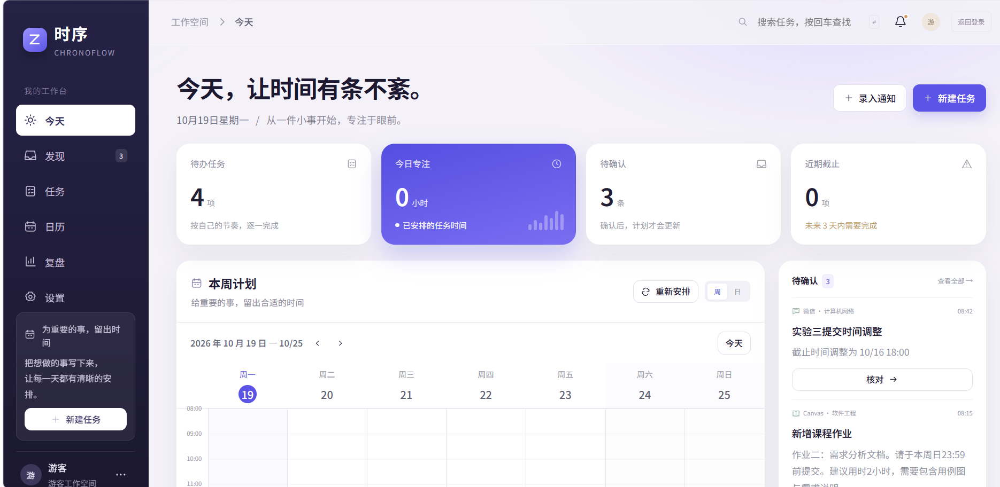
图 11 网页版工作台目标示意。网页端通过服务调用预测与规划能力，并与手机端同步任务和反馈。图示为后续建设方向。
- 规划服务化。将预测与规划部署为服务，接入网页端「生成智能计划」，与手机端保持一致的模型检查点、特征定义和调用协议。
- iOS 端适配。在现有 Android 端基础上，逐步开发面向 iPhone 的应用，沿用统一的任务、课表和执行反馈数据结构，适配 iOS 的界面交互、权限管理与本地存储。迁移端侧预测与滚动规划能力，验证预测结果一致性、课表避让、锁定保留及离线运行，并通过统一同步协议与 Android、网页端协同。
- 跨端数据同步。统一任务、时间块、锁定状态和执行反馈的数据版本，制定明确的冲突合并规则，防止覆盖用户已确认的安排。
- 云端运行管理。在服务稳定后按访问量配置资源，完善身份鉴权、租户隔离和密钥管理，并保留本机离线模式。
- 验证与结果追溯。以同一安装包验收预算约束、锁定保留和账号隔离，将训练日志、数据划分、检查点和逐场景结果绑定归档。
- 外部入口联调。验证学校 Canvas、用户配置的文本接口及通知白名单，保持各入口独立授权、独立关闭。
（六）附录
1. 软件设计资料
设计资料与正文图件相互对应：图 2 说明系统层次和数据流，图 3 说明完整方法，图 7 说明候选搜索与复核，图 8 说明任务变更闭环。表 22 提供端侧设计、模型元信息、特征配置与校验清单。
| 资料 | 内容 |
|---|---|
| Android 内置模型设计 | 工程结构、构建依赖、模型打包、确认工时规则及设备验收协议。 |
| 模型元数据 | 模型版本、配置版本、ONNX 名称及训练标记。 |
| 特征配置 | 标题、类别、课程、数值与时段特征的固定契约。 |
| 模型校验清单 | 模型及配置的文件哈希；ONNX 为 1,375,015 字节。 |
2. 核心代码
正文代码 1 和代码 2 分别展示耗时分位数计算与历史反馈更新。表 23 链接相关源文件，覆盖网络、特征、损失、预测校准、评价指标及端侧映射。完整应用按 Android 工程目录构建。
| 附件 | 实现内容 |
|---|---|
| network.py | 共享任务编码器、耗时头、执行头和分位数计算。 |
| features.py | 字符哈希、数值缩放与输入特征顺序。 |
| losses.py | 带掩码的耗时负对数似然与执行分类损失。 |
| predictor.py | 冻结网络推理与历史反馈修正。 |
| metrics.py | WOTCR、受限延迟、CVaR、扰动及约束检查。 |
| planning.py | 端侧任务、课表、确认预算与反馈到规划输入的映射。 |
3. 测试数据与结果记录
原始多表记录包含 60 个用户标识、5,099 项任务、4,135 条耗时标签和 23,053 个候选时间块；这些统计与适配后的有效训练样本量分别计算。仅被选入计划快照且具有已观察反馈的时间块用于执行监督，未知反馈和未选中候选予以排除。
划分记录与数据审计记录保留原始模拟标记。工程说明提及任务文本与耗时的测量来源，但当前附件未包含完整采集链及执行概率来源，因此按模拟或数据驱动回放解释，不作为真实用户试验。通知结构化另设合成模板评测，开发集 400 条、封闭测试 100 条，适用于受控句式识别。
表 24 链接 JVM 单元测试的原始 XML 记录，共 5 项用例，失败与错误均为 0，时间戳保留记录原值。该结果验证工程逻辑，与图 10 的历史回放及真机性能评价分别解释。
| 测试套件与原始 XML | 用例数 | 失败 | 错误 | 记录时间戳 |
|---|---|---|---|---|
| com.chronoflow.local.ApiPolicyTest | 2 | 0 | 0 | 2026-10-18T14:55:58 |
| com.chronoflow.local.CompletionTimingTextTest | 2 | 0 | 0 | 2026-10-18T14:55:58 |
| com.chronoflow.local.DomainTest | 1 | 0 | 0 | 2026-10-18T14:55:58 |
设备验收协议见第四部分，覆盖离线生成、课程避让、锁定保留、执行反馈、重启恢复、账号切换和容量不足处理。设备运行记录应包含输入快照、预期与实际结果，以及设备和应用版本；协议与执行记录分别归档。
4. 参考文献
- Rockafellar R T, Uryasev S. Optimization of conditional value-at-risk. Journal of Risk, 2000, 2(3):21–41. DOI:10.21314/JOR.2000.038。
- ONNX Runtime. Mobile documentation [EB/OL]. 移动端推理文档。访问日期：2026-10-19。
- Chaquopy. Gradle plugin documentation [EB/OL]. Android / Python 集成文档。访问日期：2026-10-19。
- Reclaim.ai. AI Task Manager App [EB/OL]. 任务安排功能。访问日期：2026-10-19。
- Motion. AI Task Manager [EB/OL]. 自动任务安排功能。访问日期：2026-10-19。
- TickTick. Features [EB/OL]. 待办与日历功能。访问日期：2026-10-19。
- 中华人民共和国教育部. 2024 年全国教育事业发展统计公报 [EB/OL]. 2025-06-11. 教育统计公报。访问日期：2026-10-19。
5. 图件与材料索引
| 材料类别 | 编号与内容 | 证据性质 |
|---|---|---|
| 界面截图 | 图 1、图 8(a)—(f) | 测试账号所示交互状态 |
| 方法与架构 | 图 2—图 7、图 9 | 系统结构与机制示意 |
| 历史回放 | 图 10 及第四部分八方法结果表 | 350 场景、种子 11 的既有汇总 |
| 未来工作台 | 图 11 | 网页服务化与跨端协同的目标示意 |
| 工程附件 | attachments/design、code、model、data、tests | 设计说明、源文件、元数据、数据审计和原始 JVM 测试记录 |
图 10 的绘图数值见历史回放主表 CSV；配图文件校验信息见图件清单。
本方案以软件实现、模型元信息、工程测试和历史回放作为成果依据，未将专利、第三方检测或用户使用证明列为已有成果。HTML 正文与 figures/、attachments/ 共同组成完整技术材料。